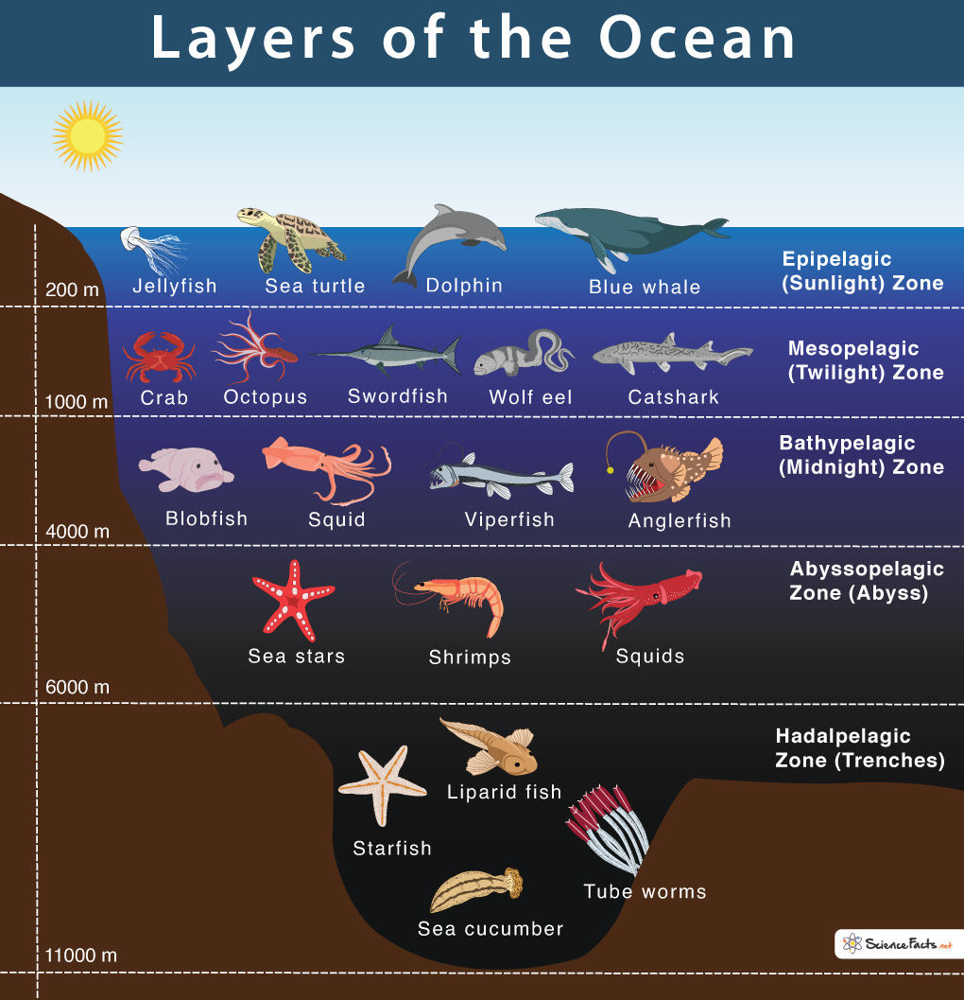

Do You Know The Layers of Ocean?

The ocean is divided into layers:
- The Sunlight Zone: The Top Layer
- The Twilight Zone
- The Midnight Zone
- The Abyssal Zone
- The Hadal Zone: The Bottom Layer
The Sunlight Zone is the top layer of the ocean. Most plants, mammals, and sea creatures survive on this layer. The Trench Zone is the deepest layer of the sea. This layer has freezing temperatures and extreme darkness. Very few sea creatures can survive on this level.